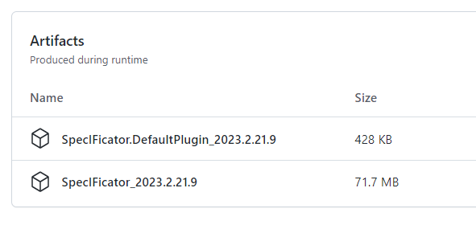

SpecIFicator Download
Frontend
Aktueller Arbeitsstand
Den aktuellen Stand der Entwicklung des SpecIFicator Framewok und des SpecIFicator Default Plug-in können Sie direkt als Ergebis des aktuellen Build-Standes herunterladen (Frontend snapshot build).
Download SpecIFicator Frontend Snapshot Build für Windows
Klicken Sie dazu auf den obersten erfolgreichen Build in der angezeigten Liste:

Scrollen Sie nun auf der erscheinenden Seite nach unten. Sie finden unter 'Artifacts' zwei Dateien zum
Download. Beispielsweise:

Laden Sie beide herunter. Die Daten sind aus technischen Gründen doppelt gepackt. Das heisst, dass Sie sie auch doppelt entpacken müssen.
Installation
Entpacken Sie zunächst das SpecIFicator Framework aus der Datei SpecIFicator_<Version> an eine Stelle ihrer Wahl.
Entpacken Sie dann das SpecIFicator Standard-Plug-in aus der Datei SpecIFicator.DefaultPlugin_<Version> und kopieren Sie die Inhalte, also den Ordner SpecIFicator.DefaultPlugin an folgende Stelle:
c:\Users\<YourWindowsUserName>\AppData\Local\SpecIFicator\plugins\
Nun können Sie die Applikation durch starten des SpecIFicator Frameworks starten. Im ihrem Framework-Ordner befindet sich eine Datei namens SpecIFicator.exe
Hinweis: Da die Applikation aktuell nicht digital signiert wurde, erscheint beim ersten Start eine Warnmeldung 'Unbekannter Herausgeber'. Diese können Sie durch 'trotzdem ausführen' überschreiben.
Freigegebene Version
Aktuell gibt es noch keine offiziell freigegebene Version des SpecIFicator Frontend. Bis dahin nutzen Sie bitten des aktuellen Arbeitsstand (s.o.).